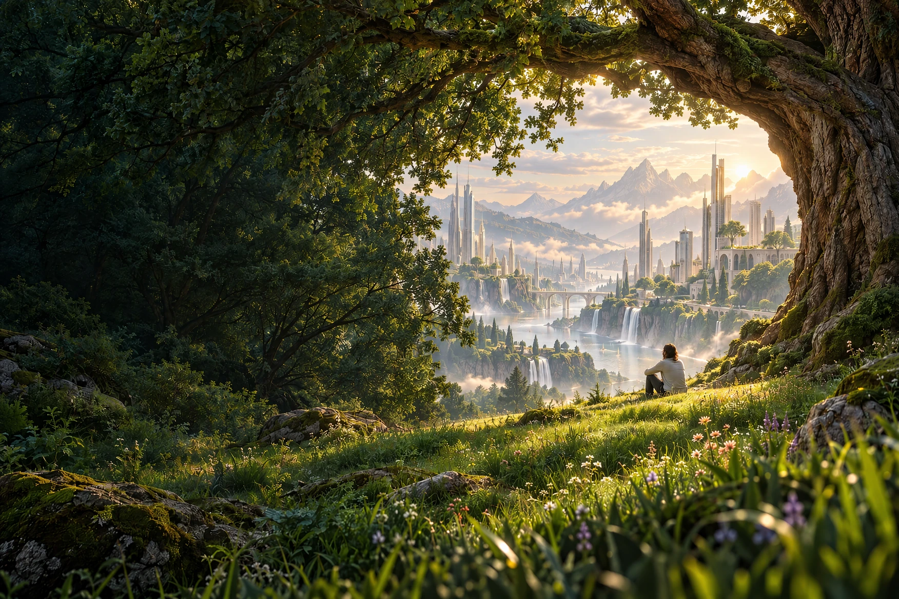
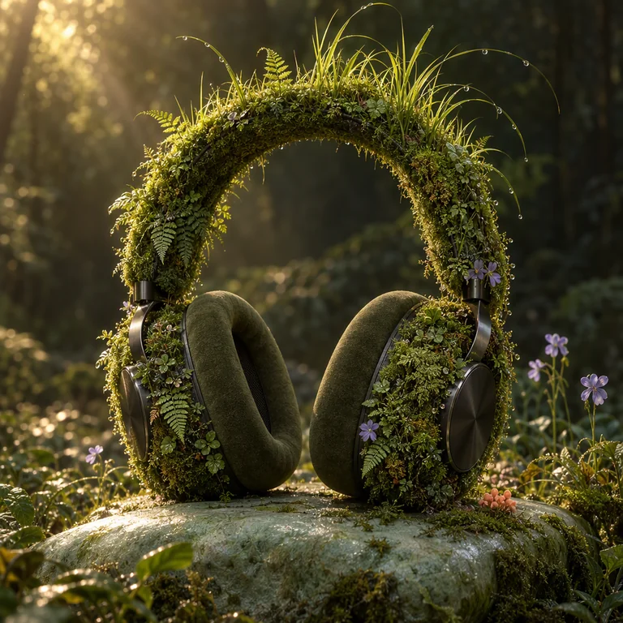

下班后，还要追多少个 AI？
十一点半，收藏夹又多了一条教程。沿着《高性价比人生指南》，聊聊睡眠、消息与那个总觉得自己还不够努力的晚上。
2026.09.24AI 学习


LATEST EPISODES / 最近更新
通勤的路，散步的十分钟。
留一点空白，听见别的可能。
十一点半，收藏夹又多了一条教程。沿着《高性价比人生指南》，聊聊睡眠、消息与那个总觉得自己还不够努力的晚上。
路线不用记录，耳机可以摘掉。今天先把那些待办留在桌上，去看看路边的树，是不是已经换了一点颜色。
从一段看起来很漂亮的代码开始，聊模型交付之后的那半份工作：读懂、验证，以及敢于说这段我还没想明白。